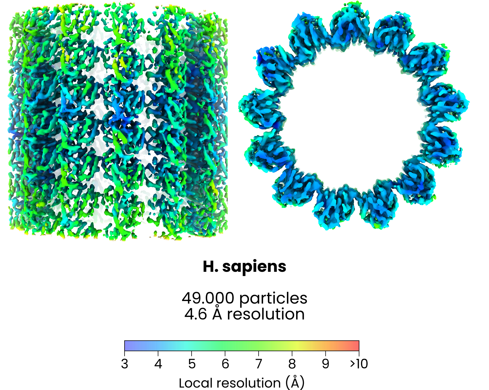

2. Microtubules
Example 2: HeLa microtubule
In this example we used Warp, AreTomo3, easymode, Relion5, and M to reconstruct, denoise, segment, pick, and average microtubules in HeLa cells
Dataset and computational resources
For this test we used 621 tilt series of FIB-milled HeLa cells which we collected ourselves. They are not yet available online but hopefully will be soon.
We used 4 NVIDIA RTX 4090 GPUs for most processing steps.
At the onset the data in this example consisted of just tilt series and mdocs (we did not use the gain references). Pixel size was 1.56 Å/px, dose 4.6 e⁻/Ų per tilt (150 e⁻/Ų total), dose-symmetric tilt series of ±45° with 3° increments.
project_root/
├── frames/ # 621 x 31 = 19282 .tif files
│ ├── 250531_l1p1_001_-10.0_20250531_093402.tif
│ ├── 250531_l1p1_001_-7.0_20250531_093438.tif
│ └── ...
└── mdocs/ # 621 .mdoc files
├── 250531_l1p1.mdoc
├── 250531_l1p1_2.mdoc
└── ...
Step 1: tomogram reconstruction
easymode reconstruct --frames frames --mdocs mdocs --apix 1.56 --dose 4.6 --no_halfmaps
warp_tiltseries/reconstruction/.
Step 2: tomogram denoising
easymode denoise --data warp_tiltseries/reconstruction --output warp_tiltseries/reconstruction/denoised --mode direct --method n2n --gpu 0,1,2,3
warp_tiltseries/reconstruction/denoised/.
Step 3: microtubule segmentation
easymode segment microtubule --data warp_tiltseries/reconstruction/denoised --output segmented --gpu 0,1,2,3
Step 4: vectorizing microtubule instances & generating coordinates
easymode pick microtubule --data segmented --output coordinates/microtubule --length 1000 --spacing 200 --per_filament
Step 5: per-filament averaging
A tricky thing about microtubules is that they have a distinct polarity, but when parsing euler angles from the tangent to the filament you can't yet take this polarity in to account. So when you use the resulting euler angles (which may be off by 180°) you end up with a microtubule-like mixed polarity tube. A second problem is that while microtubules mostly have 13 protofilaments, they can also sometimes have 12 or 14 or some other number. For best STA results you would have to separate out the particles from filaments with different protofilament numbers. We do this via per-filament STA and determining the polarity and protofilament number based on the resulting averages. This per-filament averaging is a bit awkward, so we used a script to automate it:
Per-filament averaging script
import os, glob, subprocess, json, starfile
import numpy as np, mrcfile
ROOT = '/cephfs/mlast/em/HeLa_MPA_merged'
def _run(cmd, capture=False):
print(f'\033[42m{cmd}\033[0m\n')
ret = subprocess.run(cmd, shell=True, capture_output=capture, text=True if capture else None)
if ret.returncode != 0:
print(f'\033[91merror running {cmd}\033[0m')
return ret.stdout
filaments = sorted(glob.glob(f'{ROOT}/coordinates/microtubule/*.star'))
filaments = sorted(filaments, key=lambda x: os.path.getsize(x), reverse=True)
for f in filaments:
try:
name = os.path.basename(os.path.splitext(f)[0])
os.makedirs(name, exist_ok=True)
if os.path.exists(f'{ROOT}/{name}/Refine3D/job001/run_data.star'):
print(f'skipping {name}')
else:
particles = starfile.read(f)
tomostar = particles['rlnMicrographName'][0]
# # STEP 1 - export particles with WarpTools
if len(particles) < 10:
continue
if not os.path.exists(f'{ROOT}/MICROTUBULE/{name}/particles.star'):
os.chdir('..')
_run(f"WarpTools ts_export_particles --perdevice 4 --input_data {ROOT}/tomostar/{tomostar} --settings {ROOT}/warp_tiltseries.settings --input_star {f} --coords_angpix 10.0 --output_angpix 5.0 --box 64 --diameter 300 --3d --output_star {ROOT}/MICROTUBULE/{name}/particles.star --output_processing {ROOT}/MICROTUBULE/{name}/particles")
os.chdir('MICROTUBULE')
star_data = starfile.read(f'{ROOT}/MICROTUBULE/{name}/particles.star')
star_data['rlnImageName'] = [p.replace('MICROTUBULE', f'{ROOT}/MICROTUBULE') for p in star_data['rlnImageName']]
star_data['rlnCtfImage'] = [p.replace('MICROTUBULE', f'{ROOT}/MICROTUBULE') for p in star_data['rlnCtfImage']]
starfile.write(star_data, f'{ROOT}/MICROTUBULE/{name}/particles.star')
# STEP 2 - run Relion 3D refinement.
os.chdir(f'{ROOT}/MICROTUBULE/{name}')
os.makedirs(f'Refine3D/job001', exist_ok=True)
_run('mpirun -n 5 --oversubscribe relion_refine_mpi '
'--sym C11 '
'--o Refine3D/job001/run '
'--auto_refine '
'--split_random_halves '
'--i particles.star '
'--sigma_tilt 30 '
'--ref ../emd_7973.mrc '
'--firstiter_cc '
'--trust_ref_size '
'--ini_high 90 '
'--pool 3 '
'--pad 2 '
'--ctf '
'--particle_diameter 300 '
'--flatten_solvent '
'--zero_mask '
'--oversampling 1 '
'--healpix_order 1 '
'--auto_local_healpix_order 1 '
'--offset_range 3 '
'--offset_step 1 '
'--low_resol_join_halves 40 '
'--norm '
'--scale '
'--j 14 '
'--gpu "" '
'--pipeline_control Refine3D/job001/')
os.chdir(f'{ROOT}/MICROTUBULE')
last_it = sorted(glob.glob(f'{ROOT}/MICROTUBULE/{name}/Refine3D/job001/run_it*_half1_class001.mrc'))[-1]
polarity_map = mrcfile.read(last_it)[32-12:32+12, :, :].mean(axis=0)
with mrcfile.new(f'polarity_maps/{name}.mrc', overwrite=True) as mrc:
mrc.set_data(polarity_map.astype(np.float32))
except Exception as e:
print(e)
You could also run a variation of this script with C13 symmetry enforced in the Refine3D job. For filaments that do have 13 protofilaments, this helps to accentuate the polarity in the resulting averages. Or even running it three times, once with C12, C13, and C14 symmetry, to figure out the polarity and the number of protofilaments. To adapt this script to your situation, you might want to copy it into an LLM and ask for guidance.
This script saved the averages of each individual filament to polarity_maps/, which in this case we visually inspected to select a subset of 13-protofilament filaments with known polarity.
Step 6: global averaging
We then pooled all particles found in filaments that clearly had 13 protofilaments and a consistent polarity (rotating the angles by 180 degrees for those particles that were inverted relative to the reference). This yielded ~3800 particles, which were roughly aligned. We exported these at 5 Å/px using WarpTools ts_export_particles and ran a Relion5 Refine3D job which quickly reached ~10 Å resolution.
Finally, we used ChimeraX and the 10 Å average to position 13 cropped alpha beta tubulin monomers in the map, sampled the translation and orientation of each monomer relative to the center of the full map, applied the resulting transformation matrices to the .star file (generating 13 new particles for each original 1 particle), and ran refinement in M. This reached 4.6 Å. This ChimeraX-subboxer is not currently in a state ready for sharing, so for the time being we refer to Alister Burt's Napari subboxer instead.

Note
It should also be possible to average all particles at once rather than doing per-filament subtomogram averaging first. For instance, running a single Relion5 Refine3D job with 30° of freedom around the prior gives a well aligned mixed-polarity average. Next, a 3D classification with 2 classes works to mostly separate the two polarities (especially when enforcing a C13 symmetry - which is not good for final averaging, but does help to accentuate the polarity in the microtubule cross-sections). Finally, correcting for the opposing polarities and pooling both classes should allow for averaging to decent resolution; we got to 8 Å this way in M but then got stuck. Perhaps another round of classification, using 12-, 13-, and 14-protofilament references, would have helped to sort out the particles at that point; but by then we had already had more success with the somewhat awkward per-filament averaging approach. Classification is also not guaranteed to separate the polarities completely, so you may end up with contradictory orientations even within one filament. A third option would be to use helical refinement - we didn't try this.